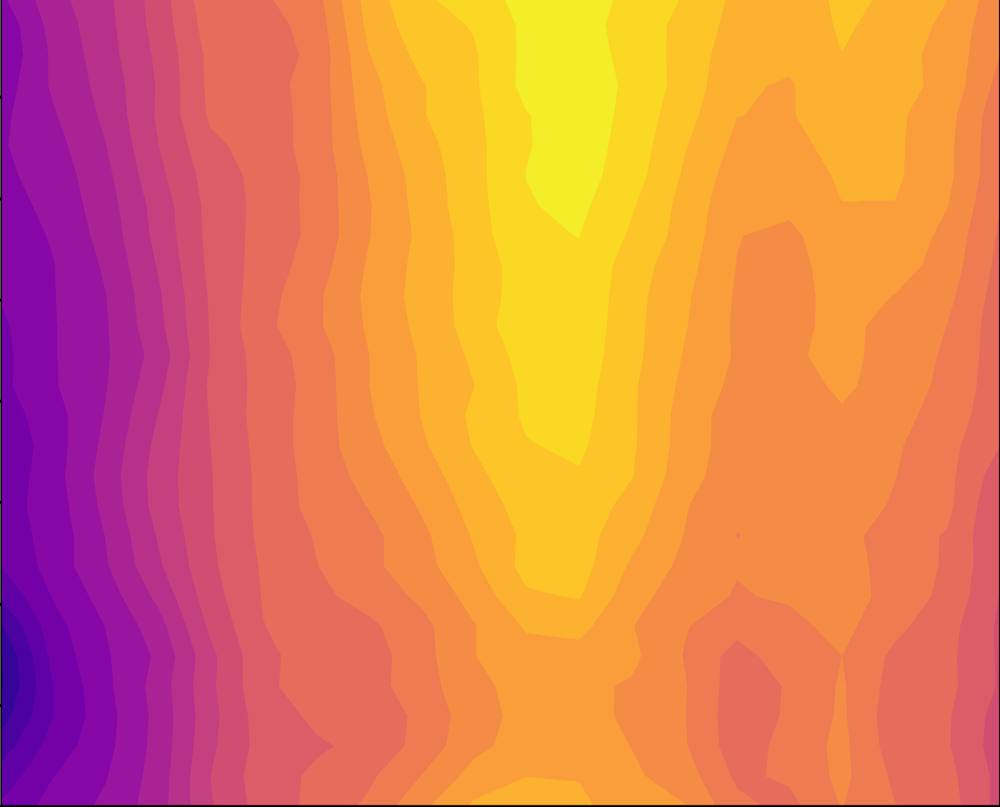

For those of a scientific persuasion
From me:
Bucket reflections
In other words, the shape you see inside your coffee mug. I've actually never had coffee by the way.

Pavement rainbows
An interesting phenomenon... not to be confused with the more well known oil film
interference patterns.

Alpine meadow formation
How are alpine meadows formed??

Temperatures inside my house
Measuring temperatures inside my house on a hot day -
paying special attention to the variation of temperature with
height.

Favorites:
Mindscape podcast by Sean Carroll. I don't like the philosophical ones though - I don't think philosophy is my thing.
In Our Time podcast by Melvyn Bragg. Preferably for learning more about something you already know a little about.
For those of a religious persuasion
My work:Notes on Miracles
My notes on C. S. Lewis's book Miracles - they add up to 16 pages and consist of summary and nice quotes.
Lexicographic analysis of the Pauline Epistles
A computer analysis of the word frequencies in the Greek New Testament to examine the contested authorships of various letters by Paul the Apostle.
Favorites:
Learning in War-Time (1939) [pdf] by C. S. Lewis
This essay written by Lewis at the start of the Second World War seeks to answer the following quesiton: "Why should we continue to take an interest in [scholarly pursuits] when the lives of our friends and the liberties of Europe are in the balance? Is it not like fiddling while Rome burns?" In addressing that question, Lewis takes it one step further for the academic Christian and asks: "How is it right for creatures who are every moment advancing either to Heaven or to hell to spend any fraction of the little time allowed them in this world on such comparative trivialities as literature or art, mathematics or biology?" This generalization keeps this essay relevant for all academic Christians, in and out of wartime. In my opinion, it's one of Lewis's most forceful works and he writes as if he were sending the reader off to the front lines himself.
The Relation of Science and Religion (1956) by Feynman
The transcript of a talk given by Richard Feynman, taken from here. Feynman (one of the most beloved physicists of the 20th century and an atheist) offers some interesting insights, some of which I admittedly don't quite understand.
Miscellaneous of the miscellaneous
Some bird pictures?Doodle gallery